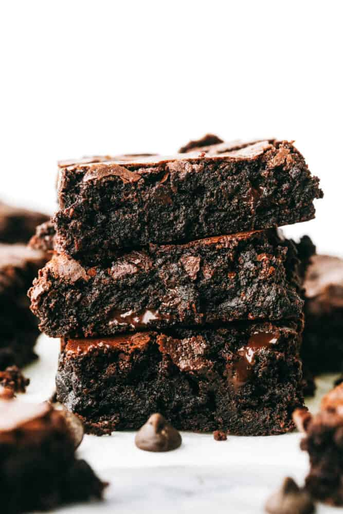

Home
Brownies

Ingredients
- 1 cup unsalted butter melted
- 2 Tablespoons vegetable oil
- 2 ¼ cup granulated sugar
- 4 large eggs
- 1 Tablespoon vanilla
- 1 cup all purpose flour
- 1 teaspoon salt
- 1 teaspoon baking powder
- 3/4 cup Cocoa Powder
- ¼ cup dark cocoa powder I used Hershey’s special dark cocoa powder
- 4 ounces chocolate chips or chunks
Instructions
- Preheat oven to 350 and spray a 9×13 baking pan with pan spray and line with parchment paper. Set aside.
- In a medium bowl, whisk together butter, oil and sugar until well combined. Add in the eggs and vanilla and whisk until combined.
- In another bowl, sift together the flour, salt, baking powder, and both cocoa powder. If you want a darker brownie, go ahead and use ½ cup regular cocoa powder and ½ cup dark cocoa powder. Gently mix the dry ingredients into the wet ingredients and mix until just combined. Gently stir in chocolate chips.
- Pour batter into the prepared pan and bake for about 45-50 minutes, until a toothpick comes out clean. If you like your brownies a little more on the gooey side, bake for 40-45 minutes.
- Allow the brownies to cool at least 30 minutes before serving. Pair with ice cream for a delectable treat!